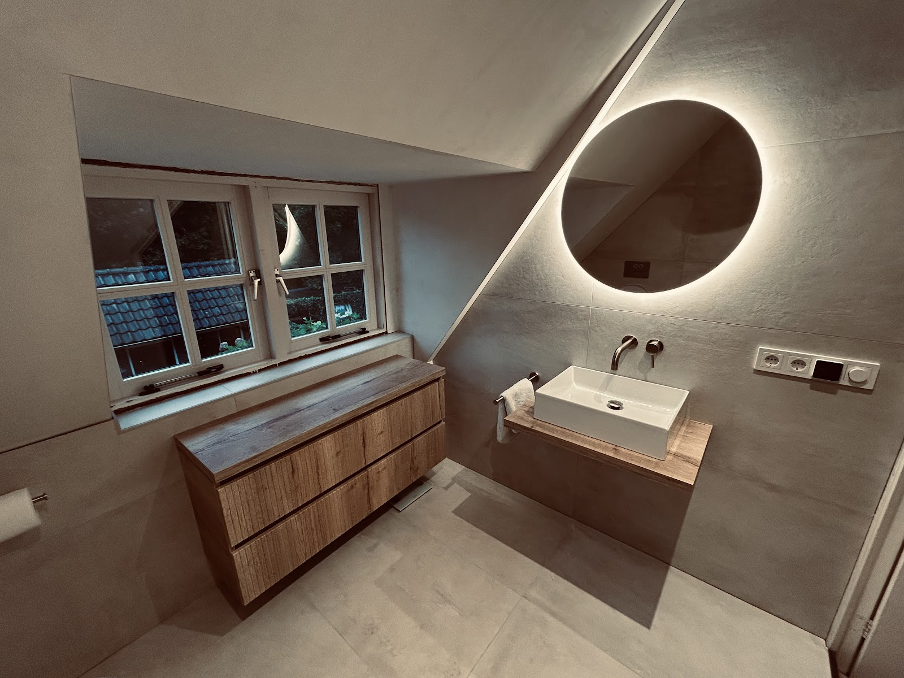
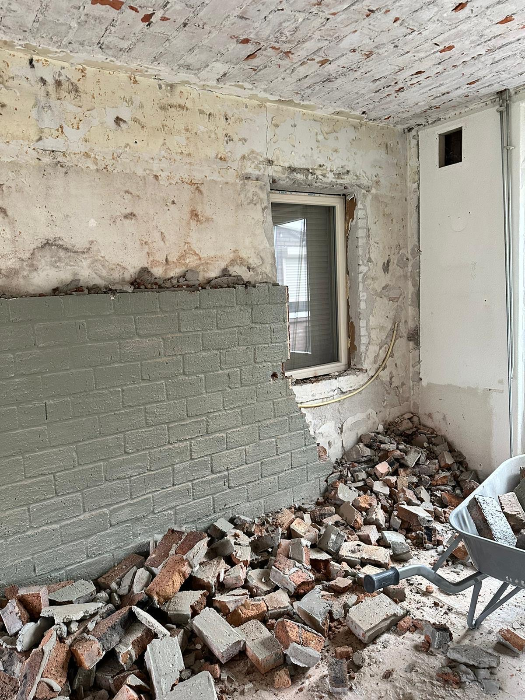
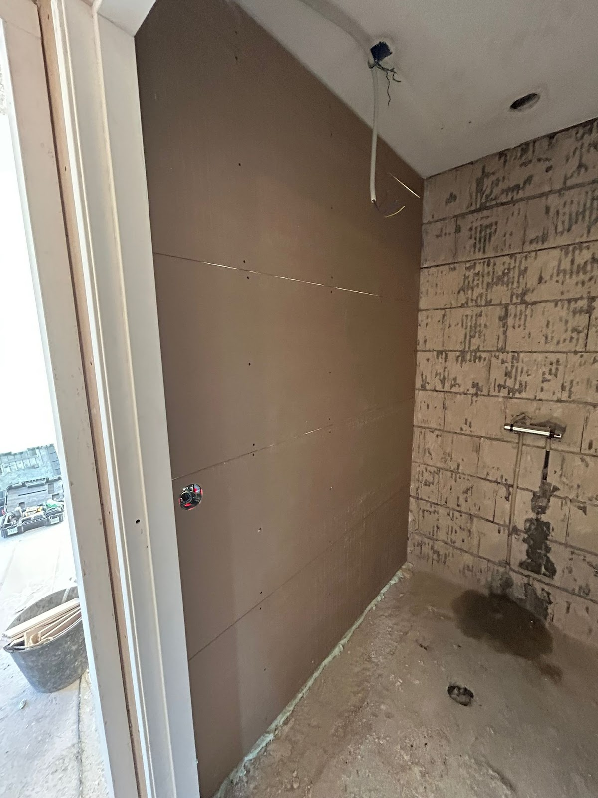
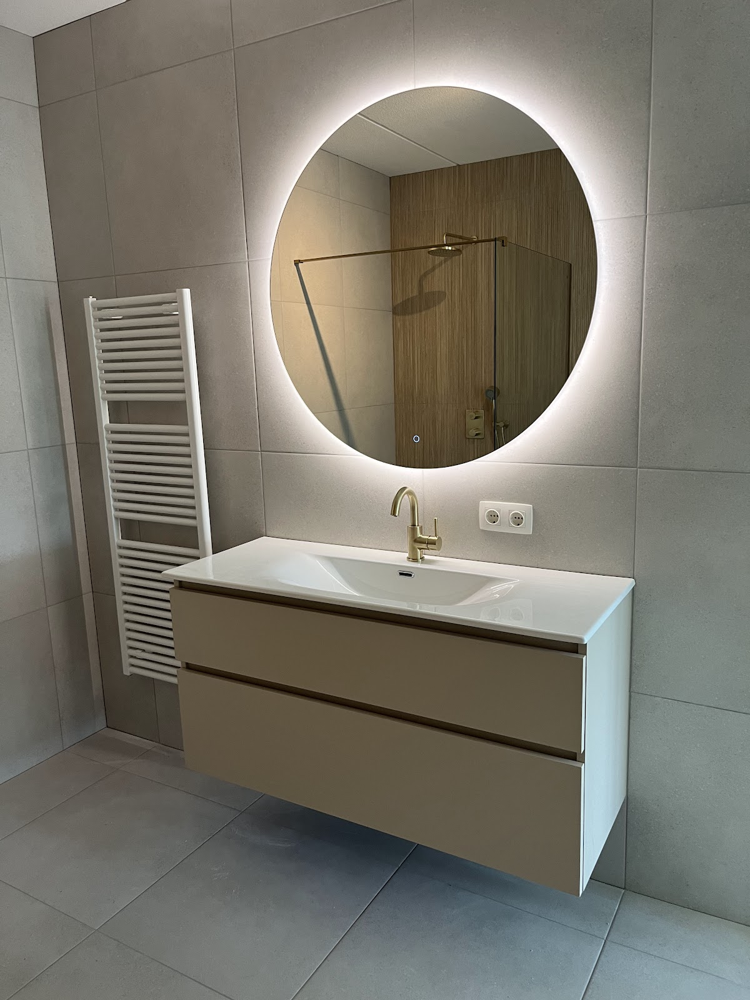
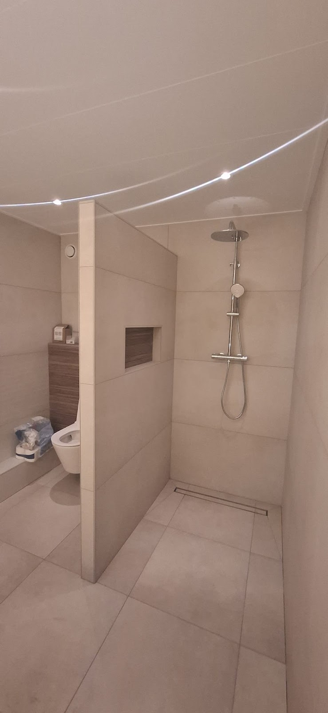
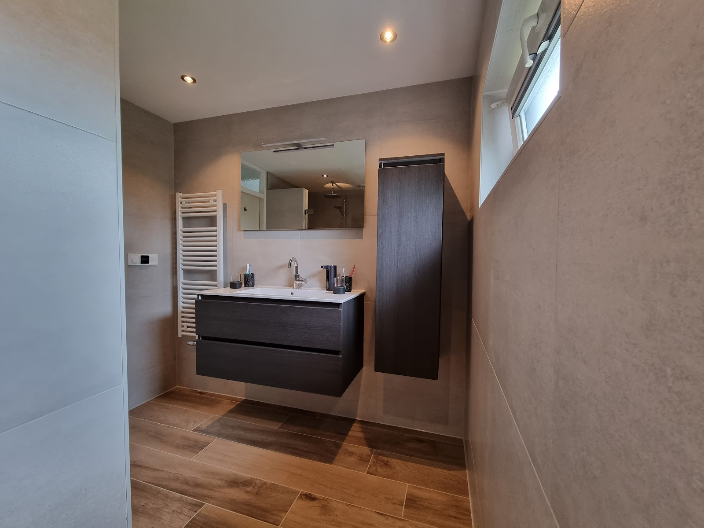
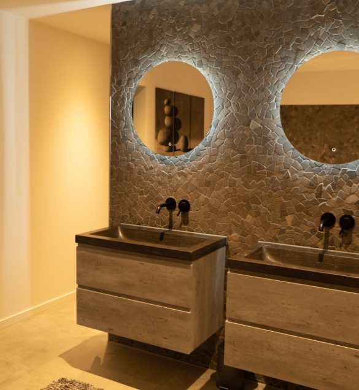
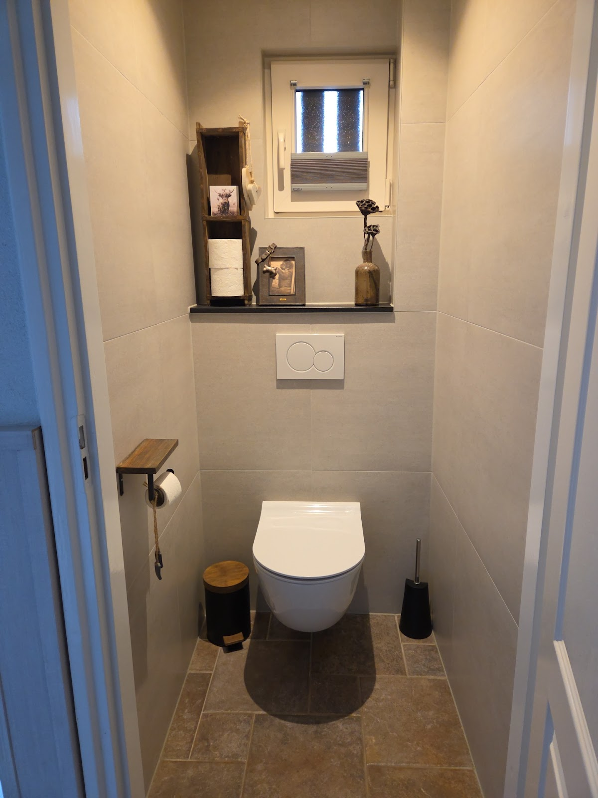
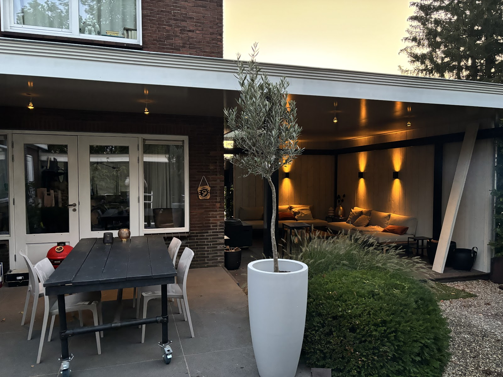
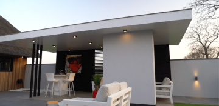

Van sloop tot spiegel.
Derksen Projectservice verbouwt badkamers, toiletten en complete woningen in en rond Doetinchem. U heeft één aanspreekpunt, wij regelen de rest.
4,9 op Google, uit 44 reviews

Eerst gaat alles eruit. Daarna komt het goed.
Wij slopen, leggen leidingen aan, betegelen en monteren. U hoeft geen losse vakmensen op elkaar af te stemmen.
Tijdens de verbouwing


Opgeleverd


Waar u ons voor belt


Badkamers
Een kleine inpandige badkamer of een ruime nieuwe: wij denken mee over indeling en materiaal en bouwen hem van kale vloer tot laatste kitnaad. Inloopdouche, zwevend meubel, verlichte spiegel, het kan allemaal.

Toiletten
Vaak in één klus met de badkamer. Hangend toilet, nieuwe tegels en een strakke afwerking, ook in een kleine ruimte.
Hele woningen
Een huis dat in korte tijd van binnen opnieuw moet: wij coördineren het werk en houden u onderweg op de hoogte van de voortgang. Zo renoveerden we onder meer een woning in Duiven.

En buiten
Ook overkappingen en buitenruimtes pakken we aan, met verlichting en afwerking die net zo netjes is als binnen.

Zo loopt een klus bij ons
Wat klanten het vaakst noemen, is niet de tegel maar het contact. Daar zorgen we voor.
-
1
We komen kijken en denken mee
U vertelt wat u wilt, wij geven eerlijk advies over indeling, materiaal en wat er technisch nodig is.
-
2
U weet vooraf wanneer we komen
De planning krijgt u op tijd door. Eén vast aanspreekpunt houdt u op de hoogte.
-
3
Vakmensen die netjes werken
Zorgvuldig werk, een opgeruimde werkplek. Loopt er iets anders dan gepland, dan schakelen we snel en lossen we het op, ook met de leverancier.
-
4
Opgeleverd zoals afgesproken
We ronden netjes af en lopen het resultaat samen met u door.
Wat klanten zeggen
4,9 uit 44 Google-reviews
“Goede communicatie en denken met je mee. Planning wordt op tijd doorgegeven en ze staan altijd direct klaar. Het was een fijne samenwerking!”
“Wij hebben onze nieuwe badkamer + Wc laten plaatsen door Derksen Projectservice. Van begin tot eind is alles uitstekend verlopen. De communicatie was duidelijk en prettig, ze denken actief mee en geven goed advies. Mike schakelt snel, en problemen worden snel opgepakt en opgelost. Het eindresultaat is volledig naar w…”
“Robin Derksen en zijn medewerkers hebben in korte tijd onze woning in Duiven super gerenoveerd. Sterke punten: meedenken, voortdurend informeren over de voortgang. Wij zijn werkelijk heel tevreden. Hierbij ook dank aan Mike en de anderen die mooi en netjes hebben gewerkt!😄 Dank jullie wel!”
“Derksen projectservice heeft onze gehele badkamer renovatie gedaan. Wij zijn uiterst tevreden. Het contact gaat via Robin, hij regelde alles, reageert snel bij vragen, denkt mee aan oplossingen en loste probleempjes op met de leverancier. Hij heeft deskundige vakmensen aan het werk die zorgvuldig en ook erg netjes werk…”
“Via Sani4all zijn wij voor de verbouwing van een kleine inpandige badkamer en wc in onze nieuwe woning, in contact gekomen met Derksen Projectservice. We zijn superblij zowel de gang van zaken tijdens de de verbouwing als met het eindresultaat. Vanwege een klus die tijdelijk was stil komen te vallen konden ze de dag n…”
Vertel ons wat u wilt verbouwen
Bellen is het snelst. Mailt u liever, stuur dan gerust een paar foto's van de huidige ruimte mee.
06 28402062 info@derksenprojectservice.nl- Adres
- Zuivelweg 159
7003 CE Doetinchem - Bereikbaar
- Ma t/m vr 9 tot 17 uur
Za en zo gesloten